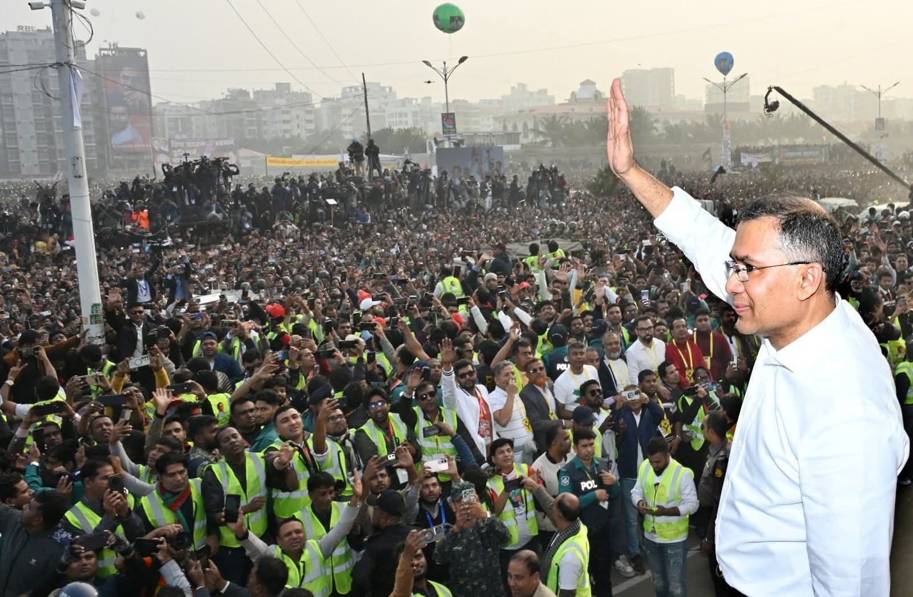
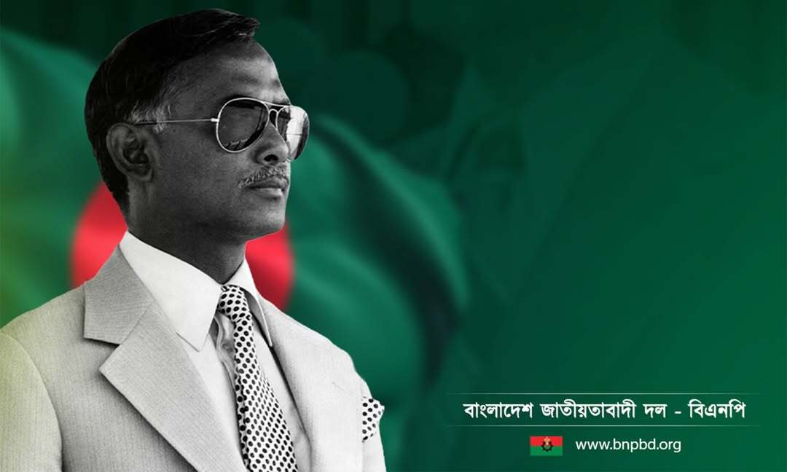
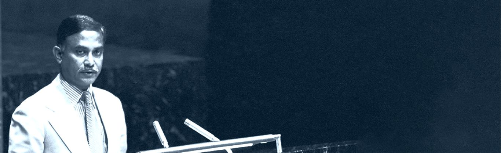
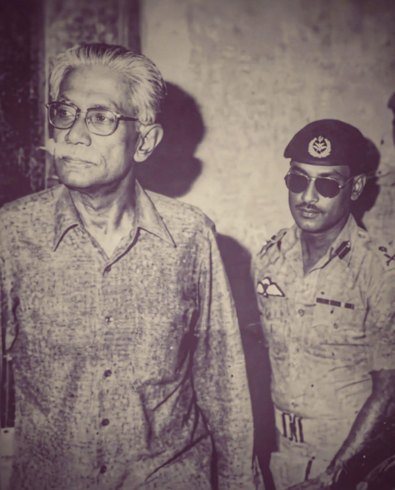
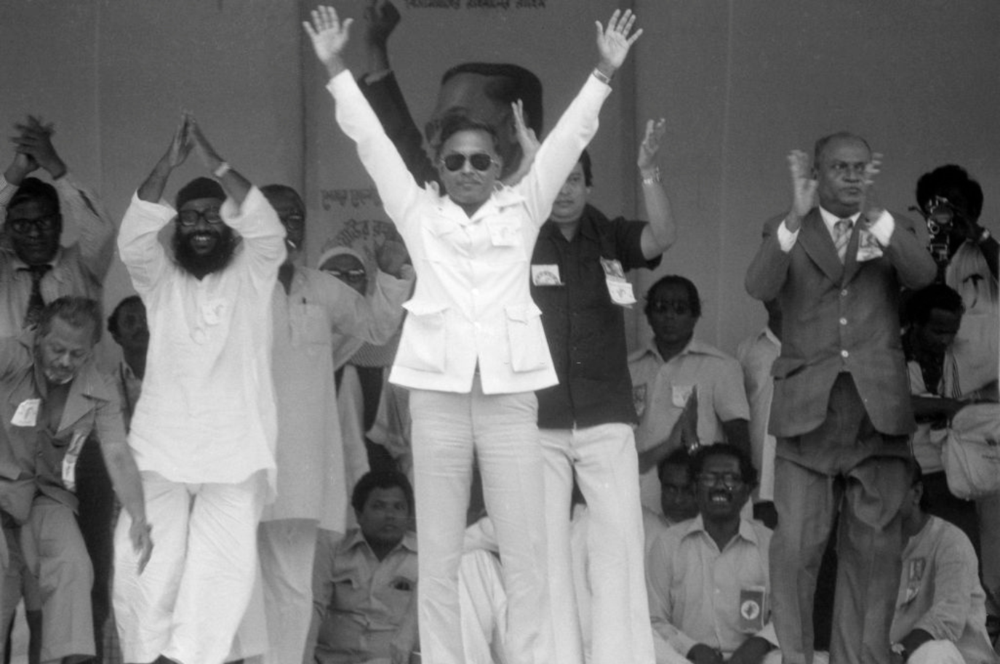
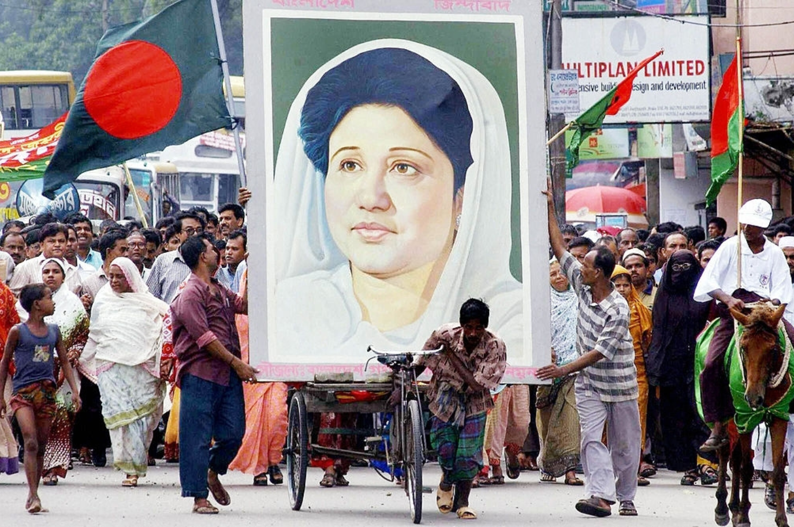
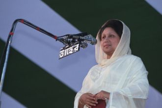
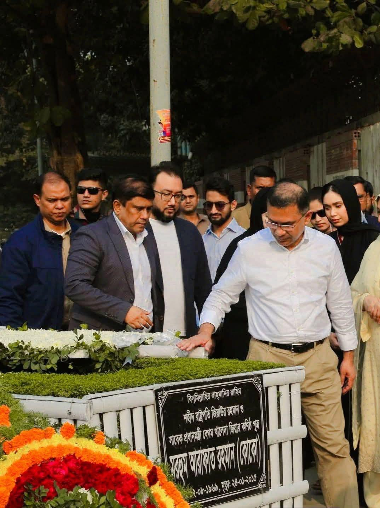
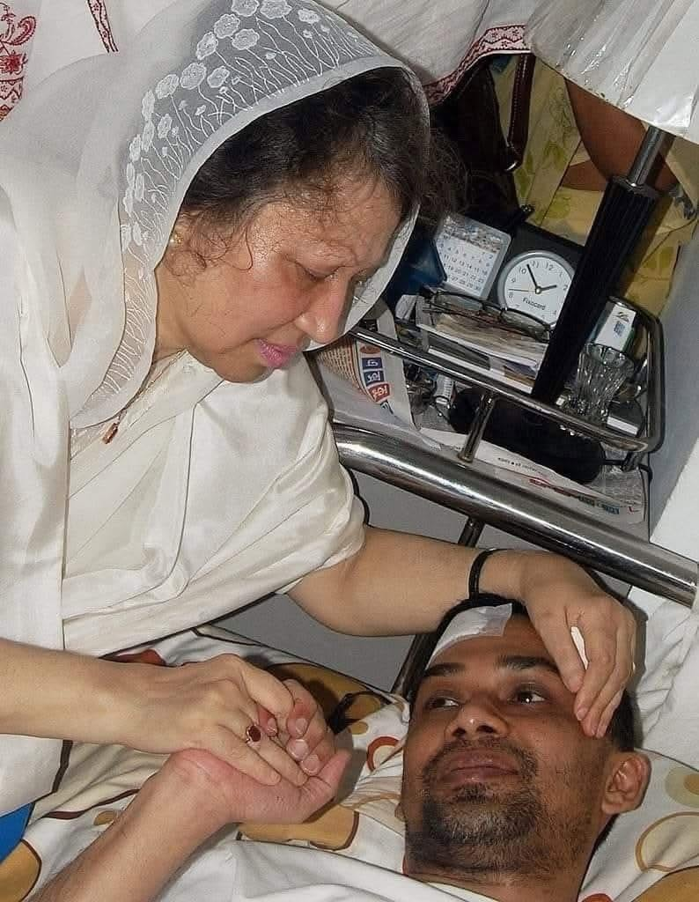
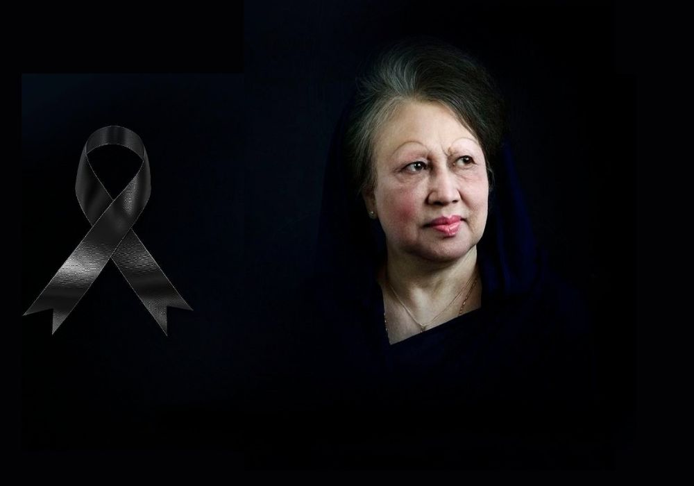

Leadership of the Private University Wing
From our Supreme Guardian to the Central Committee that leads Bangladesh's private-university students today.
The chain of leadership
Tarique Rahman
The guardian and guiding spirit of every tier of the Jatiyatabadi Chhatra Dal.


 President
President
Md Abu Huraira
 General Secretary
General Secretary
M Rajibul Islam Talukder
The Private University Wing is the dedicated private-university front of the Jatiyatabadi Chhatra Dal.
The Private University Wing command
The office-bearers guiding 142 university units across Bangladesh.
Photos load automatically when added to assets/img/central/; monogram shown otherwise. Extended office-bearers are representative.
The Quota Movement & our martyrs
In the July 2024 quota-reform uprising, Chhatra Dal stood shoulder to shoulder with the students of Bangladesh — and paid in blood for democracy.
49 martyrs of Jatiyatabadi Chhatra Dal
More than 400 people were killed nationwide between 16 July and 4 August 2024. Jatiyatabadi Chhatra Dal lost 49 leaders and activists in the movement that restored the people's voice. We remember their sacrifice.
 Wasim Akram
First July martyr, Ctg
Wasim Akram
First July martyr, Ctg
Jatiyatabadi Chhatra Dal — a chronicle
Chhatra Dal is born
On 1 January 1979, President Ziaur Rahman founds the Jatiyatabadi Chhatra Dal to cultivate the nation's future leaders, adopting the 19-Point Programme.
Vanguard against autocracy
Chhatra Dal stands at the forefront of the mass uprising that ends the Ershad regime and restores parliamentary democracy.
The Private University Wing
As private universities flourish, a dedicated Private University Wing is formed to organise a new generation of nationalist students.
The July Uprising
Chhatra Dal joins the quota-reform movement; 49 of its leaders and activists embrace martyrdom for the people's rights.
Tarique Rahman leads the nation
Under our Supreme Guardian, the movement enters a new era — সবার আগে বাংলাদেশ, Bangladesh First.
Founders of a nation's ideals

Ziaur Rahman
A decorated freedom fighter, Ziaur Rahman broadcast the declaration of Bangladesh's independence from Kalurghat in March 1971, commanded Sectors 1 & 11 and raised the legendary Z-Force — earning the gallantry title Bir Uttam.
As President he restored multi-party democracy, launched the 19-Point Programme, and founded the BNP (1978) and the Jatiyatabadi Chhatra Dal (1979) on the ideology of Bangladeshi nationalism.
"I believe in the politics of production — every citizen a soldier of development."





Begum Khaleda Zia
The first woman Prime Minister of Bangladesh (1991–96 & 2001–06). Her uncompromising resistance to military dictatorship built the movement that ended the Ershad regime in 1990 and restored democracy.
The longest-serving Chairperson of the BNP (1984–2025), she earned the title Deshnetri — "Leader of the Nation".
"Democracy is not a gift — it is won by the courage of the people."



Carry the torch forward
Every member of the Private University Wing is heir to this legacy. Claim your profile and serve the nation.